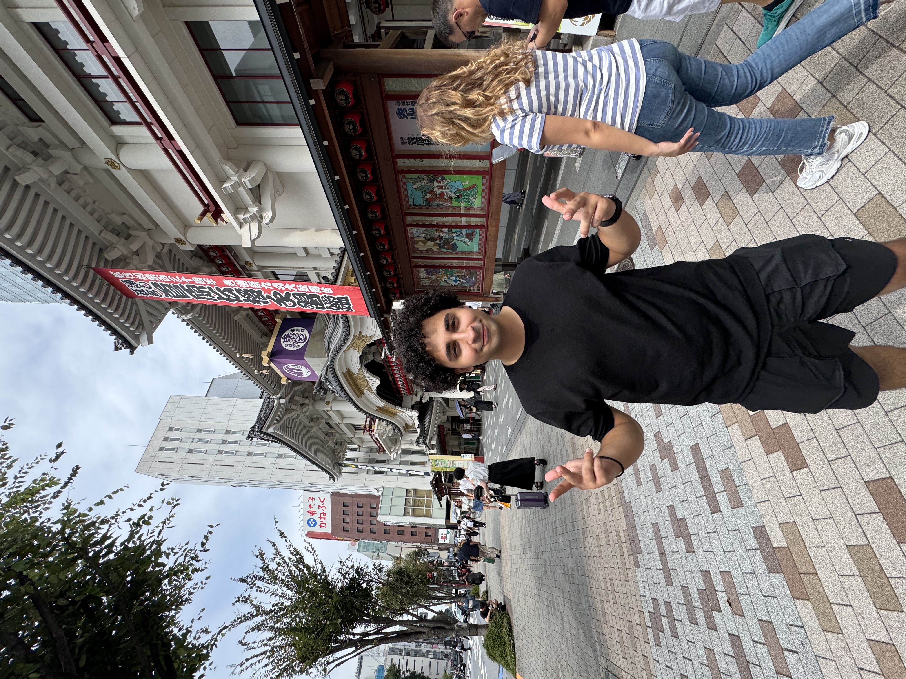

hi, i'm mo.
software developer. i design infrastructure, ship ai features, and keep things running. currently founding engineer at retellio, where i built everything from the ground up: aws, ci/cd, the llm pipeline, all of it. before that, i helped build nasdaq's first genai product, now used by 2,000+ institutions.
currently based in toronto, making things that work and occasionally things that look nice.
experience
-
Founding Engineer at RetellioJul 2024 – Present
built the entire platform from scratch: aws infrastructure, llm/rag pipelines, microservices, and integrations with salesforce, hubspot, gong. 99.9% uptime, shipping daily.
-
Senior Software Developer at NasdaqJan 2024 – Jul 2024
helped build nasdaq's first genai product, an entity research copilot. owned retrieval and evaluation modules, deployed on aws/terraform. now used by 2,000+ financial institutions.
-
Software Developer at VerafinJan 2022 – Jan 2024
started as intern, promoted twice. built fraud detection agents and ml pipelines in java. owned features from design to production, handled on-call for critical systems.
-
Web Developer at Memorial UniversityJan 2020 – Jan 2022
redesigned the student portal serving 15k+ users. built auth, scheduling integrations, and accessible ui from the ground up.
education
-
Computer Science at Memorial University2019 – 2023
st. john's, newfoundland. studied algorithms, systems, and ai. worked part-time as a developer throughout.
skills
i write python, typescript, go, and swift. i build on aws with docker, kubernetes, and terraform. i care about llms, distributed systems, and good ux.